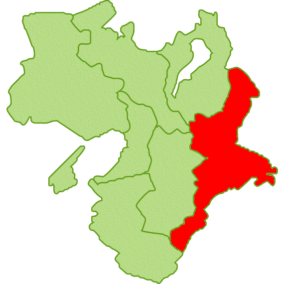
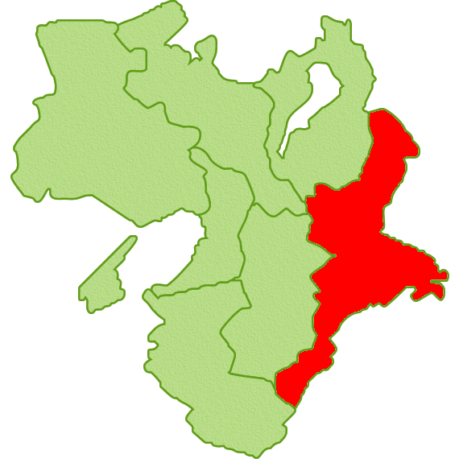
La préfecture de Mie
Berceau de nombreuses traditions culturelles
Le Kansai (関西) est une région située dans le sud-ouest du Japon, alliant patrimoine historique et culture traditionnelle avec une forte influence économique. C’est une destination idéale pour découvrir l'histoire du Japon tout en profitant de la modernité de ses grandes villes.
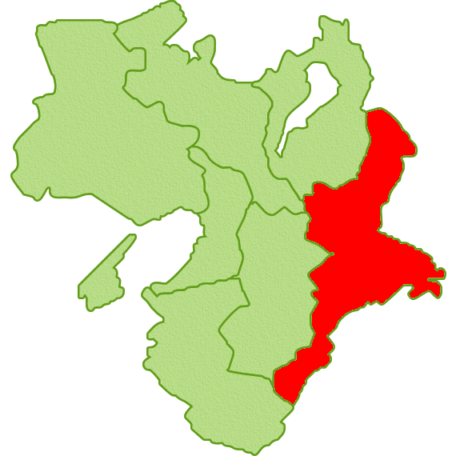
 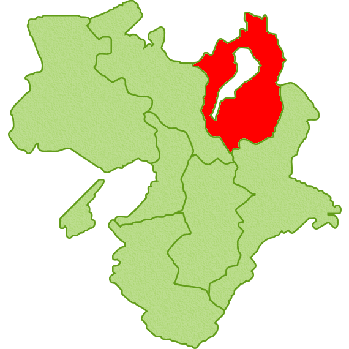
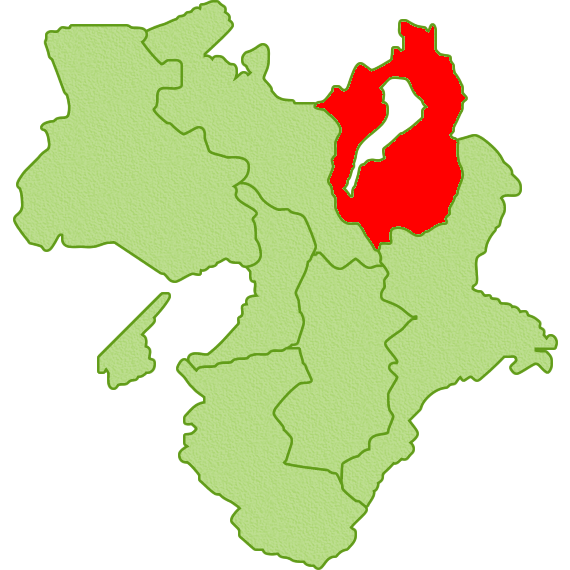
 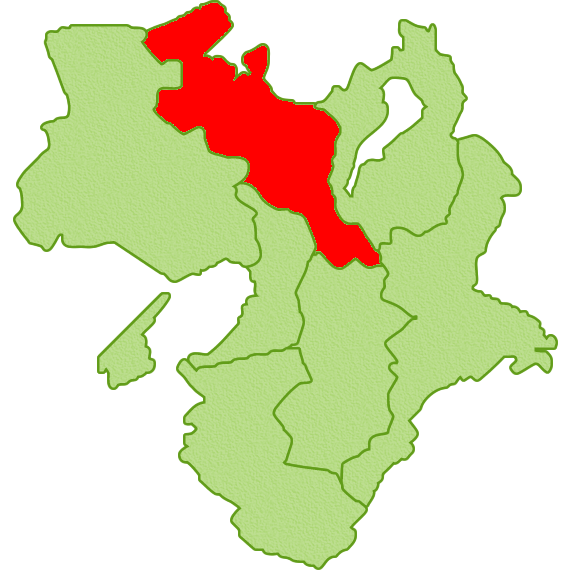
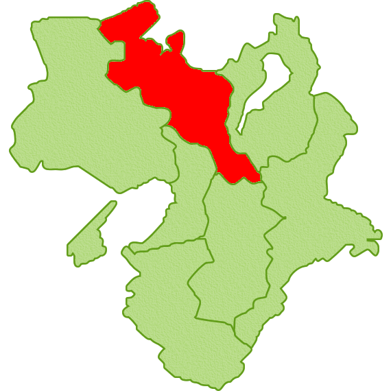
La préfecture de Kyoto est située dans la région du Kansai, et est réputée pour son riche patrimoine culturel et historique. La ville de Kyoto, ancienne capitale impériale pendant plus de mille ans, abrite de nombreux temples, sanctuaires, jardins et palais, dont le célèbre Kinkaku-ji(Pavillon d'Or) et le Fushimi Inari-taisha.
 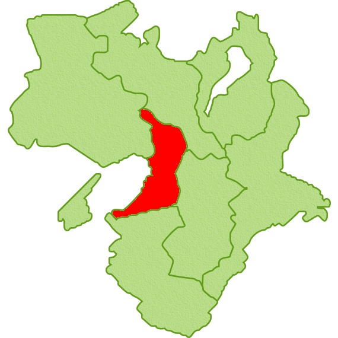
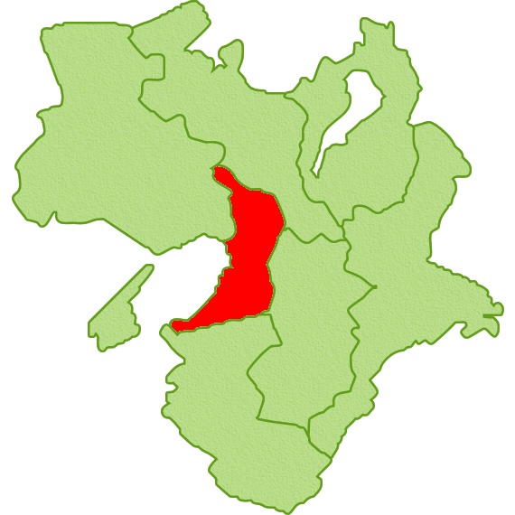
 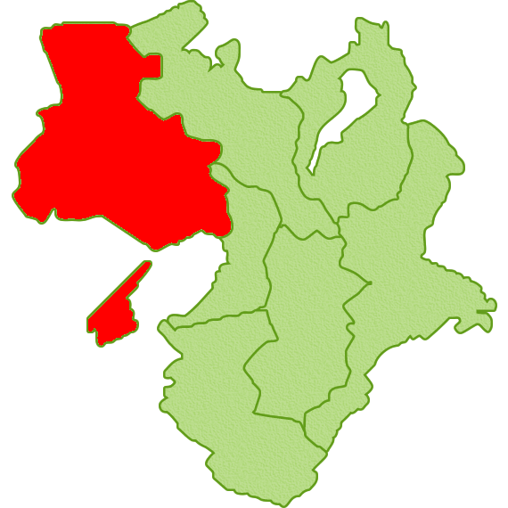
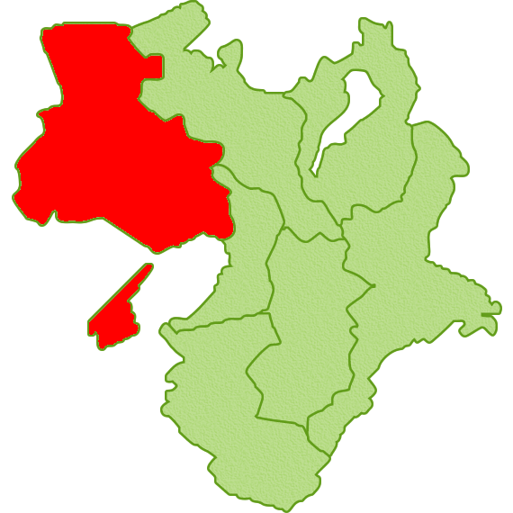
La préfecture de Hyogo est située dans la région du Kansai. Elle est célèbre pour sa capitale Kobe, un port important et une ville cosmopolite, connue pour son bétail de haute qualité (bœuf de Kobe). Hyogo offre une diversité de paysages, allant des montagnes à la mer, avec des sites naturels tels que le mont Rokko et des sources thermales comme celles de Arima Onsen. La préfecture est également riche en histoire, abritant des temples, des châteaux comme le château de Himeji(classé au patrimoine mondial de l'UNESCO), et une cuisine variée.
 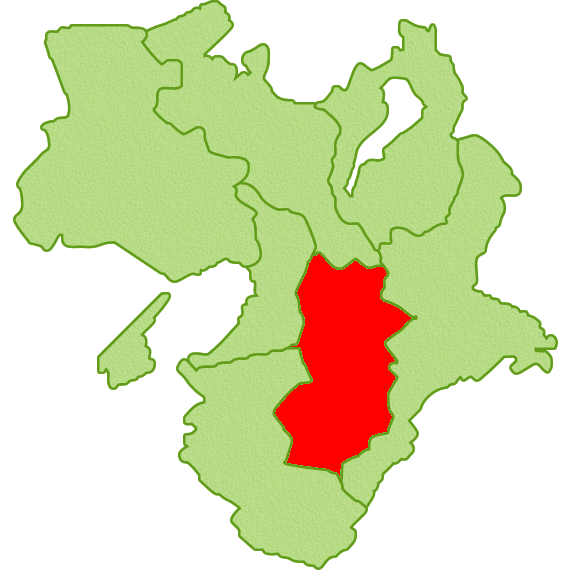
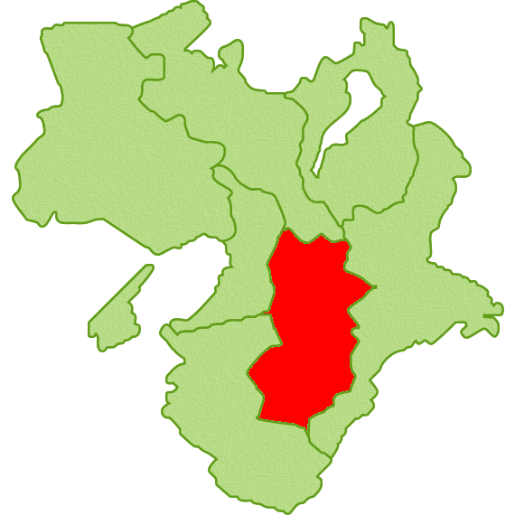
 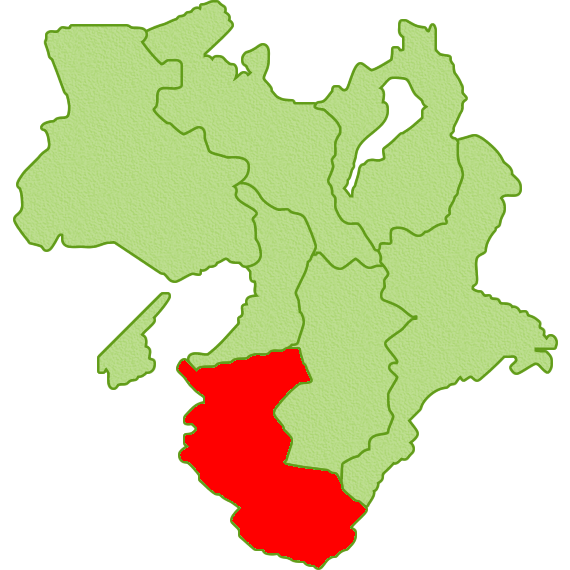
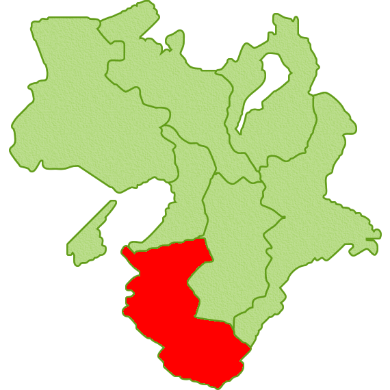
Également connu sous le nom de Château du Héron blanc en raison de la couleur blanche de ses murs. Il a été désigné trésor national en 1951 et inscrit sur la liste du patrimoine mondial de l'UNESCO en 1995.
L'un des rares châteaux japonais à avoir conservé son donjon original, ce qui en fait un site emblématique du Japon féodal. Il est inscrit comme trésor national depuis 1952.
Symbole emblématique de la ville d'Osaka, construit à la fin du XVIe siècle par le seigneur Toyotomi Hideyoshi, il a joué un rôle clé dans l'unification du Japon.